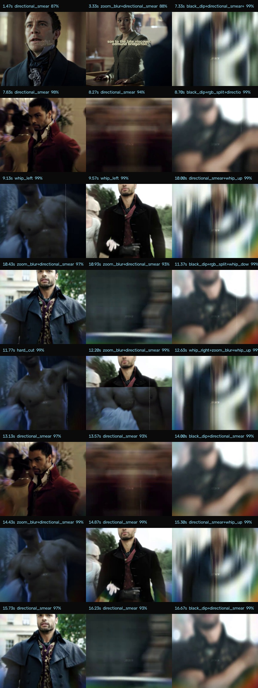

ssstik.io_@jotaceditzbr_1786144340464.mp4 | 576x576 | 30.000 fps | 19.30s
Measurements and recipes are evidence-based inferences from flattened video, not recovered project metadata.
Suggested main-edit start: 7.333s. Audio tempo: n/a BPM.
| Time | Boundary type | Effect stack | Span | Graph | Confidence | Measured parameters | Likely AE recipe |
|---|---|---|---|---|---|---|---|
| 1.467s | cut_transition | directional_smear | 3f | smooth_in_out | 87% | impact_shake; travel 42.1px; scale 1.539x; rotation -0.4deg | Directional Blur |
| 3.333s | cut_transition | zoom_blur + directional_smear | 3f | sharp_start | 88% | impact_shake; travel 42.8px; scale 0.789x; rotation -8.8deg | Motion Tile, BlurMoCurves, Radial Blur, Directional Blur |
| 7.333s | cut_transition | black_dip + directional_smear + whip_up | 10f | sharp_end | 99% | mask_wipe + black_dip; travel 0.0px; scale 1.000x; rotation 0.0deg | Opacity, Directional Blur, Motion Tile, Position, Directional Blur |
| 7.833s | cut_transition | directional_smear | 3f | sharp_end | 98% | mask_wipe; travel 154.4px; scale 0.366x; rotation -99.6deg | Directional Blur |
| 8.267s | cut_transition | directional_smear | 3f | sharp_end | 94% | spin_zoom; travel 724.4px; scale 3.101x; rotation -94.0deg | Directional Blur |
| 8.700s | cut_transition | black_dip + rgb_split + directional_smear | 5f | sharp_start | 99% | mask_wipe + black_dip; travel 125.2px; scale 1.129x; rotation -8.3deg | Opacity, Channel Blur, , Directional Blur |
| 9.133s | cut_transition | whip_left | 3f | speed_ramp | 99% | mask_wipe; travel 212.4px; scale 1.248x; rotation -117.2deg | Motion Tile, Position, Directional Blur |
| 9.567s | cut_transition | whip_left | 3f | sharp_end | 99% | mask_wipe; travel 75.6px; scale 3.328x; rotation 17.9deg | Motion Tile, Position, Directional Blur |
| 10.000s | cut_transition | directional_smear + whip_up | 9f | sharp_end | 99% | mask_wipe; travel 0.0px; scale 1.000x; rotation 0.0deg | Directional Blur, Motion Tile, Position, Directional Blur |
| 10.433s | cut_transition | zoom_blur + directional_smear | 3f | sharp_start | 97% | crossfade + mask_wipe; travel 136.3px; scale 0.670x; rotation -61.0deg | Motion Tile, BlurMoCurves, Radial Blur, Directional Blur |
| 10.933s | cut_transition | zoom_blur + directional_smear | 3f | sharp_start | 93% | crossfade; travel 434.6px; scale 2.054x; rotation -166.0deg | Motion Tile, BlurMoCurves, Radial Blur, Directional Blur |
| 11.367s | cut_transition | black_dip + rgb_split + whip_down | 5f | sharp_start | 99% | black_dip; travel 250.0px; scale 0.299x; rotation -60.4deg | Opacity, Channel Blur, , Motion Tile, Position, Directional Blur |
| 11.767s | cut_transition | hard_cut | 3f | smooth_in_out | 99% | impact_shake; travel 0.0px; scale 1.000x; rotation 0.0deg | Hard Cut |
| 12.200s | cut_transition | zoom_blur + directional_smear | 3f | sharp_start | 99% | mask_wipe; travel 108.5px; scale 2.049x; rotation -3.1deg | Motion Tile, BlurMoCurves, Radial Blur, Directional Blur |
| 12.633s | cut_transition | whip_right + zoom_blur + whip_up | 8f | sharp_end | 99% | mask_wipe; travel 0.0px; scale 1.000x; rotation 0.0deg | Motion Tile, Position, Directional Blur, BlurMoCurves, Radial Blur, Position, Directional Blur |
| 13.133s | cut_transition | directional_smear | 3f | smooth_in_out | 97% | crossfade + mask_wipe; travel 153.0px; scale 0.736x; rotation -106.8deg | Directional Blur |
| 13.567s | cut_transition | directional_smear | 3f | sharp_end | 93% | impact_shake; travel 233.8px; scale 0.679x; rotation -110.5deg | Directional Blur |
| 14.000s | cut_transition | black_dip + directional_smear | 5f | sharp_start | 99% | black_dip; travel 173.9px; scale 0.250x; rotation -102.3deg | Opacity, Directional Blur |
| 14.433s | cut_transition | zoom_blur + directional_smear | 3f | sharp_end | 99% | mask_wipe; travel 26.3px; scale 0.466x; rotation -40.5deg | Motion Tile, BlurMoCurves, Radial Blur, Directional Blur |
| 14.867s | cut_transition | directional_smear | 3f | sharp_end | 99% | spin_zoom; travel 493.6px; scale 7.037x; rotation -128.9deg | Directional Blur |
| 15.300s | cut_transition | directional_smear + whip_up | 8f | smooth_in_out | 99% | mask_wipe; travel 0.0px; scale 1.000x; rotation 0.0deg | Directional Blur, Motion Tile, Position, Directional Blur |
| 15.733s | cut_transition | directional_smear | 3f | sharp_start | 97% | crossfade + mask_wipe; travel 154.2px; scale 0.383x; rotation -98.3deg | Directional Blur |
| 16.233s | cut_transition | directional_smear | 3f | sharp_start | 93% | crossfade; travel 248.4px; scale 0.456x; rotation -105.9deg | Directional Blur |
| 16.667s | cut_transition | black_dip + directional_smear | 5f | sharp_start | 99% | black_dip; travel 4400.8px; scale 351.222x; rotation 45.0deg | Opacity, Directional Blur |
| 17.067s | cut_transition | hard_cut | 3f | sharp_start | 99% | impact_shake; travel 489.6px; scale 3.846x; rotation -143.0deg | Hard Cut |
| 17.500s | cut_transition | zoom | 3f | sharp_start | 99% | mask_wipe; travel 389.3px; scale 3.807x; rotation 44.1deg | Motion Tile, BlurMoCurves, Radial Blur |
| 17.900s | cut_transition | black_dip + white_flash + zoom_blur + directional_smear | 9f | sharp_end | 99% | black_dip + white_flash; travel 199.5px; scale 1.203x; rotation 28.0deg | Opacity, Exposure, Motion Tile, BlurMoCurves, Radial Blur, Directional Blur |
